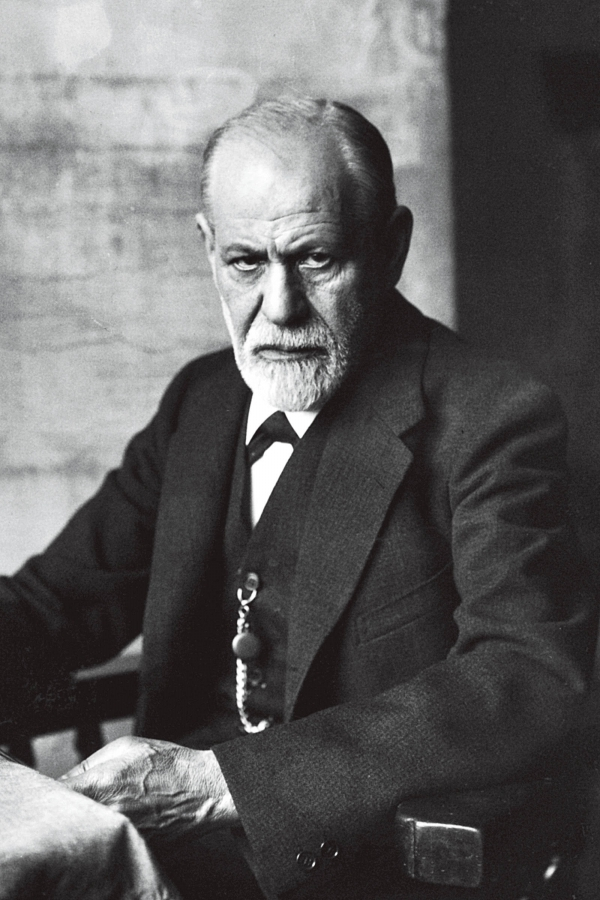

 Sigmund Freud, the father of psychoanalysis, was a physiologist, medical doctor, psychologist and influential thinker of the early twentieth century. Working initially in close collaboration with Joseph Breuer, Freud elaborated the theory that the mind is a complex energy-system, the structural investigation of which is the proper province of psychology. He articulated and refined the concepts of the unconscious, infantile sexuality and repression, and he proposed a tripartite account of the mind’s structure—all as part of a radically new conceptual and therapeutic frame of reference for the understanding of human psychological development and the treatment of abnormal mental conditions. Notwithstanding the multiple manifestations of psychoanalysis as it exists today, it can in almost all fundamental respects be traced directly back to Freud’s original work.
Freud’s innovative treatment of human actions, dreams, and indeed of cultural artifacts as invariably possessing implicit symbolic significance has proven to be extraordinarily fruitful, and has had massive implications for a wide variety of fields including psychology, anthropology, semiotics, and artistic creativity and appreciation. However, Freud’s most important and frequently re-iterated claim, that with psychoanalysis he had invented a successful science of the mind, remains the subject of much critical debate and controversy.